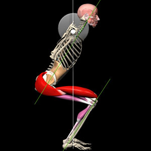
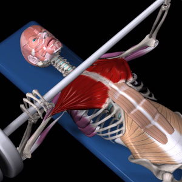
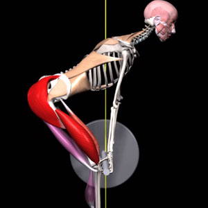
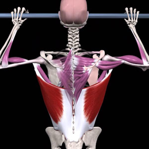
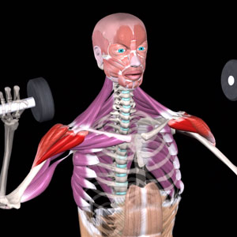

Bodybuilding
Bodybuilding is a sport focused on developing muscle size, strength, and symmetry through structured training and nutrition.
Periodization
In bodybuilding, progress is usually planned in phases. There are three main phases: bulking, cutting, and maintenance. A coach decides how long each phase should last depending on the athlete’s goals and progress.
Bulking:
A calorie surplus phase where the main goal is to gain muscle mass, supported by higher carbs and overall calories.Cutting:
A calorie deficit phase focused on reducing body fat while trying to keep as much muscle as possible, with higher protein and controlled carbs/fats.Maintainance:
A balanced phase where calorie intake matches energy needs, helping to maintain current weight, recover, and prepare for the next cycle.
Exercises
Key compound exercises used in bodybuilding include:
- Squat 
- Bench press 
- Dead lift 
- Pull-up 
- Shoulder press 
Macros per kg bodyweight
Nutrition Guidelines per 1 kg Bodyweight
|
kcal |
protein |
fats |
carbs |
| Bulking |
36-38 |
2 |
1-1.1 |
5-7 |
Cutting |
28-30 |
2-2.2 | >
0.8-0.9 |
2.5-3.5 |
| Maintainance |
32-34 |
1.8-2 |
1 |
4-4.5 |